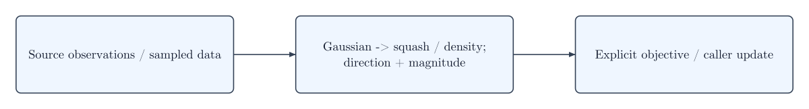
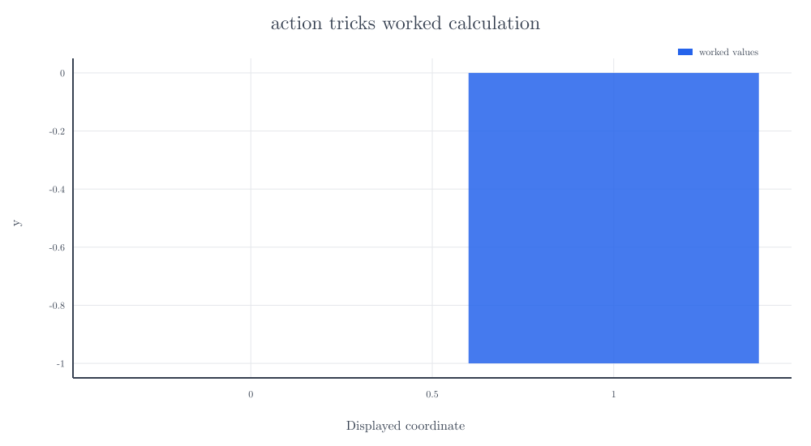
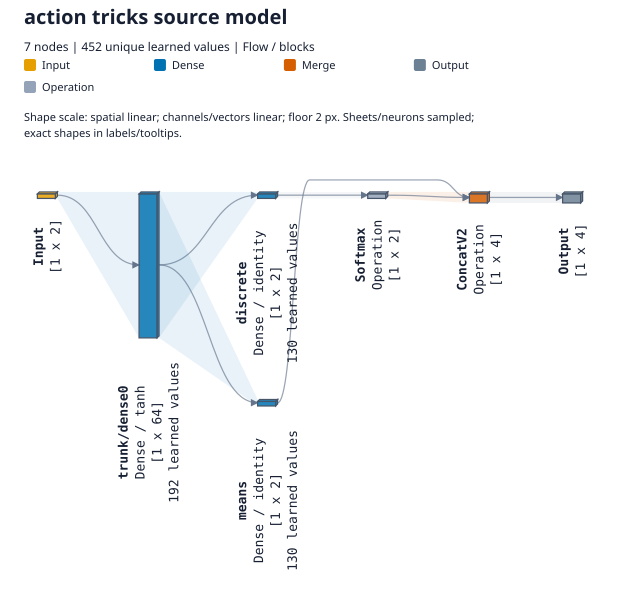
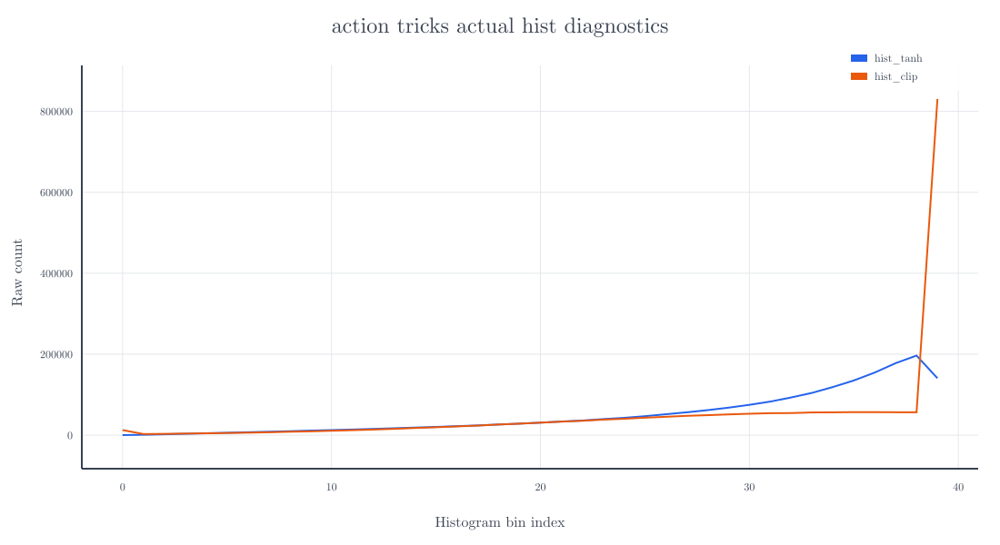
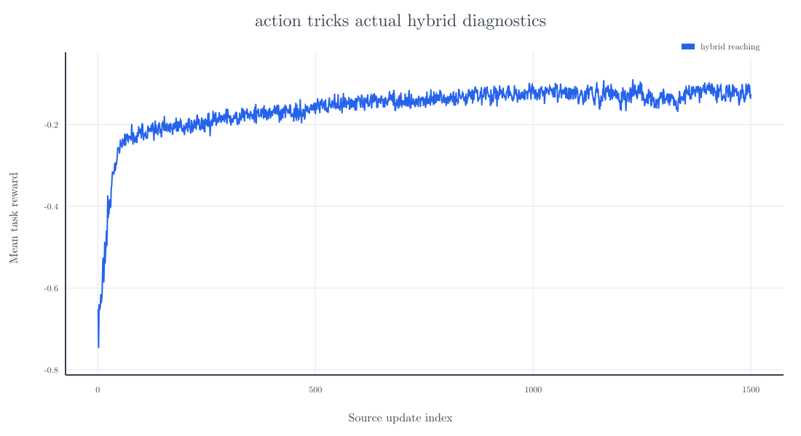

Action-Space Transformations: Tanh Densities and Hybrid Reaching
Abstract
The complete native C++ source protocol keeps its interaction, replay, objectives, optimizer steps and evaluations editable. Canonical graphs/data calculations preserve original parameter names and random streams. Default bounded runs retain deferred convergence assertions; original optional full budgets remain available.
Follow the data and model
Gaussian -> squash / density; direction + magnitude.
#include <dm/dm.hpp>
int main(){std::filesystem::create_directories("build");dm::graphics::Diagram d(29,1200);dm::graphics::DiagramNodeStyle s;s.width=14;s.height=5;s.font_size=23;d.node("input",{-18,0},"Source observations / sampled data",s).node("graph",{0,0},"Gaussian -> squash / density; direction + magnitude",s).node("update",{18,0},"Explicit objective / caller update",s).edge("input","graph").edge("graph","update").save_svg("build/action_tricks_method.svg");}
A hand-checkable calculation
Moving right by.5 from0 reaches target.5 with reward0; moving left by.5 gives reward-1. The source fits this direction-plus-magnitude task and separately checks the tanh density against two million samples.
#include <dm/dm.hpp>
int main(){std::filesystem::create_directories("build");std::vector<double>values{dm::nn::models::HybridReachReward(0,.5,1,.5),dm::nn::models::HybridReachReward(0,.5,0,.5)};std::print("| coordinate | computed value |\n|---:|---:|\n");for(size_t i=0;i<values.size();++i)std::print("| {} | {:.9f} |\n",i,values[i]);dm::nn::save_npz("build/action_tricks_worked.npz",{{"values",dm::nn::from_vector(values)}});std::vector<double>x(values.size());std::iota(x.begin(),x.end(),0.);double low=std::min(0.,*std::min_element(values.begin(),values.end())),high=std::max(0.,*std::max_element(values.begin(),values.end())),span=std::max(1.,high-low);dm::graphics::RPlot::create().bars(x,values,"worked values",{37,99,235}).ylim(low-.05*span,high+.05*span).title("action tricks worked calculation").x_label("Displayed coordinate").size(1000,550).save_svg("build/action_tricks_worked.svg");}| coordinate | computed value |
|---|---|
| 0 | -0.000000000 |
| 1 | -1.000000000 |

Inspect the native model architecture
This separate trace calls the same canonical source graph and uses its original hidden/input/action sizes. Twin-critic and stochastic methods show one representative critic and a mean action for readability; the full experiment retains all critics and sampled actions. The trace initializes separate stores and does not change fitting.
#include <dm/dm.hpp>
int main(){namespace n=dm::nn;namespace m=n::models;std::filesystem::create_directories("build");n::ParameterStore p(0),q(1);n::Module network([&](const n::Tensor& x){auto path=m::HybridReachPolicy(p,x);return n::concat({path.probs,path.means},1);},"action tricks source model");n::ModelPlotOptions options;options.detail=n::ModelPlotDetail::Blocks;options.sizing.minimum_extent=2;options.sizing.max_planes=2;network.plot(n::zeros({1,2}),options).save_svg("build/action_tricks_network.svg");}
Complete preserved source experiment
This source has fixed budgets independent of the short-mode helper: two million histogram samples and1500 hybrid-policy updates with256 examples per update. Both are retained, along with the10000-draw random-policy comparison and four final probes. No external-framework parity is asserted. Every policy/actor schedule, replay collection, objective, optimizer/clipping step, target synchronization, temperature/dual update and search is visible below. Instrumentation copies histories/parameters without new draws or updates.
#include <dm/dm.hpp>
namespace report_capture {
inline dm::nn::NamedTensors arrays;inline std::map<std::string,std::vector<double>> traces;
inline void Trace(const std::string&name,double value){traces[name].push_back(value);}inline int monitor_index=0,checkpoint_index=0;
template<class T>void Save(const std::string& name,const std::vector<T>&v){arrays.push_back({name,dm::nn::from_vector(v)});}
struct Checkpoint{dm::nn::ParameterStore& store;~Checkpoint(){auto tag=std::to_string(checkpoint_index++);for(const auto& name:store.names())arrays.push_back({"parameters_"+tag+"_"+name,store.at(name).detach().clone()});}};
struct Flush{~Flush(){for(const auto&[name,values]:traces)Save(name,values);if(!arrays.empty()){std::filesystem::create_directories("build");dm::nn::save_npz("build/action_tricks_source.npz",arrays);}}};inline Flush flush;
}
// CMD: just run-nn action_tricks
// Action-space tricks: tanh squashing and parameterized actions.
//
// Port of tflow's action_tricks.
// Part 1. A Gaussian policy produces unbounded actions; environments want
// a box. Squashing with tanh keeps the policy differentiable but changes
// the density: log pi(a) = log N(u) - sum_i log(1 - tanh(u_i)^2). The
// correction is checked against a Monte Carlo histogram, and compared with
// the clipping alternative, which piles probability mass on the bounds.
//
// Part 2. Parameterized (hybrid) actions: a discrete choice with its own
// continuous parameters, log pi(k, u | s) = log pi_d(k|s) + log N(u | mu_k(s), sigma_k).
// A toy reaching task is solved with REINFORCE on that joint log-probability.
//
// Part 1 draws the same std::mt19937_64 samples as TF and evaluates the shared
// SquashedSample (common/rl/continuous.hpp) eagerly, so its table matches TF's
// digit for digit. Part 2's TF graph becomes eager nn ops over a
// ParameterStore; its task draws and samples use the same stream as TF but
// the weights use nn's generator, so the learning curve matches statistically.
// Editable workflow support: checks.hpp
// Small runtime checks used by the executable nn examples. They stay on in
// Release builds and make the example exit nonzero on failure, so `just
// run-all-nn` doubles as a regression test against the recorded TF numbers.
// Editable workflow support: runtime.hpp
// Bounded demonstrations by default; opt into convergence experiments explicitly.
namespace example_runtime {
inline bool Full() {
const char* value = std::getenv("DATAMUNGE_EXAMPLES_FULL");
return value && std::string(value) == "1";
}
template <typename T> T Limit(T requested, T quick_limit) {
return Full() ? requested : std::min(requested, quick_limit);
}
inline void Describe() {
if (!Full())
std::cout << "Quick demonstration: bounded training; convergence metrics require "
"DATAMUNGE_EXAMPLES_FULL=1.\n";
}
} // namespace example_runtime
namespace check {
inline void Require(bool condition, const std::string& message) {
if (!condition) throw std::runtime_error(message);
}
// A short demonstration checks execution, derivatives and persistence; reaching
// a published accuracy/return requires the separately requested full schedule.
inline void TrainingQuality(bool condition, const std::string& message) {
if (example_runtime::Full()) Require(condition, message);
else std::cout << " full-training quality check deferred: " << message << '\n';
}
inline void Near(double actual, double expected, double tolerance, const std::string& message) {
if (!std::isfinite(actual) || !std::isfinite(expected) || std::abs(actual - expected) > tolerance)
throw std::runtime_error(message + ": got " + std::to_string(actual) + ", expected " + std::to_string(expected));
}
/// Expects `f` to throw; returns the message.
template <typename F>
std::string Throws(F&& f, const std::string& message) {
try {
f();
} catch (const std::exception& e) {
return e.what();
}
throw std::runtime_error(message + ": expected an exception");
}
} // namespace check
inline void Header(const std::string& title) {
const std::size_t pad = title.size() < 60 ? 60 - title.size() : 0;
std::cout << "\n== " << title << " " << std::string(pad, '=') << "\n";
}
// Editable workflow support: rl/continuous.hpp
// datamunge::nn port of tflow_examples src/common/rl/continuous.h.
// Pieces shared by the continuous-control examples: config, deterministic
// and Gaussian actors, tanh-squashed sampling with its log-density
// correction, state-action critics, and deterministic evaluation. Actions
// inside the networks live in [-1, 1]; the environment's bounds are applied
// at the boundary with ScaleAction.
//
// Changes from the TF version: the networks are eager functions of a
// ParameterStore and a tensor (calling one twice with the same store and
// name shares its weights, as nn::Params did), NormalNoise returns an
// nn::Tensor, and the TF hardware options are accepted and ignored except
// threads=N, which sets nn's thread count.
// Editable workflow support: rl/dqn_common.hpp
// datamunge::nn port of tflow_examples src/common/rl/dqn_common.h.
// Pieces shared by the DQN-family examples: hyper-parameters, the epsilon
// schedule, a training monitor, Q-value heads (plain / dueling), greedy
// evaluation, the C51 distribution projection, and Adam with global-norm
// clipping (tflow's nn::Adam).
//
// Changes from the TF version: the TF hardware options (device=, threads=,
// xla=) are accepted and ignored, since nn runs eagerly on the CPU; QHead
// builds on a ParameterStore and returns a tensor instead of adding graph
// nodes; the noisy-network head (nn::NoisyDense) is not included, because
// datamunge::nn has no noisy layer yet.
// Editable workflow support: rl/env.hpp
namespace rl {
using datamunge::rl::environments::Obs;
using datamunge::rl::environments::Action;
using datamunge::rl::environments::ActionSpace;
using datamunge::rl::environments::StepResult;
using datamunge::rl::environments::Env;
using datamunge::rl::environments::EnvBase;
using datamunge::rl::environments::Transition;
using datamunge::rl::environments::TabularEnv;
}
// Editable workflow support: rl/utils.hpp
// datamunge::nn port: copied from tflow_examples src/common/rl/utils.h (TF-free code, unchanged).
// Small helpers shared by the RL examples: episode statistics, random and
// greedy rollouts, and printing.
namespace rl {
struct EpisodeStats {
std::vector<float> returns;
std::vector<int> lengths;
float mean_return() const {
return returns.empty() ? 0.f
: std::accumulate(returns.begin(), returns.end(), 0.f) / returns.size();
}
float mean_length() const {
return lengths.empty() ? 0.f
: std::accumulate(lengths.begin(), lengths.end(), 0.f) / lengths.size();
}
float min_return() const { return *std::min_element(returns.begin(), returns.end()); }
float max_return() const { return *std::max_element(returns.begin(), returns.end()); }
};
// Run `episodes` episodes of `env` choosing actions with `policy(obs)`.
// Uniformly random actions.
inline void PrintStats(const std::string& label, const EpisodeStats& s) {
std::printf(" %-32s return mean %8.2f min %8.2f max %8.2f length mean %6.1f\n",
label.c_str(), s.mean_return(), s.min_return(), s.max_return(), s.mean_length());
}
using dm::rl::foundations::ArgMax;using dm::rl::foundations::ArgMaxRandomTie;
inline std::string FormatObs(const Obs& o, int max_elems = 8) {
std::string s = "[";
for (size_t i = 0; i < o.size() && static_cast<int>(i) < max_elems; ++i) {
char buf[32];
std::snprintf(buf, sizeof buf, "%s%.3f", i ? " " : "", o[i]);
s += buf;
}
if (static_cast<int>(o.size()) > max_elems) s += " ...";
return s + "]";
}
} // namespace rl
namespace rl {
namespace nn = datamunge::nn;
struct DqnConfig {
int steps = 50000; // environment steps
int warmup = 1000; // steps before training starts
int batch = 64;
int buffer = 50000;
float gamma = 0.98f; // 0.99 is the usual choice; 0.98 bounds Q by 50 and makes CartPole far more stable
float lr = 5e-4f;
float clip_norm = 10.f;
int target_sync = 500; // hard target update period (steps), used when tau == 1
float tau = 0.005f; // target <- tau * online + (1 - tau) * target every step; tau = 1 means a hard copy every target_sync steps
float eps_start = 1.f, eps_end = 0.05f;
int eps_decay_steps = 10000;
int hidden = 128;
int train_every = 2;
int log_every = 5000;
int eval_every = 5000;
int eval_episodes = 5;
uint64_t seed = 0;
};
// TF-only options that the ports accept and ignore.
inline bool IsHardwareOption(const std::string& key) {
return key == "device" || key == "threads" || key == "intra_threads" || key == "inter_threads" || key == "xla";
}
// Overrides from the command line, e.g. `just run-nn dqn steps=50000 lr=5e-4`.
inline void ParseConfig(int argc, char** argv, DqnConfig* c) {
for (int i = 1; i < argc; ++i) {
const std::string arg = argv[i];
const size_t eq = arg.find('=');
if (eq == std::string::npos) continue;
const std::string key = arg.substr(0, eq);
const float v = std::strtof(arg.c_str() + eq + 1, nullptr);
if (IsHardwareOption(key)) continue;
if (key == "steps") c->steps = static_cast<int>(v);
else if (key == "warmup") c->warmup = static_cast<int>(v);
else if (key == "batch") c->batch = static_cast<int>(v);
else if (key == "buffer") c->buffer = static_cast<int>(v);
else if (key == "gamma") c->gamma = v;
else if (key == "lr") c->lr = v;
else if (key == "clip_norm") c->clip_norm = v;
else if (key == "target_sync") c->target_sync = static_cast<int>(v);
else if (key == "tau") c->tau = v;
else if (key == "eps_start") c->eps_start = v;
else if (key == "eps_end") c->eps_end = v;
else if (key == "eps_decay_steps") c->eps_decay_steps = static_cast<int>(v);
else if (key == "hidden") c->hidden = static_cast<int>(v);
else if (key == "train_every") c->train_every = static_cast<int>(v);
else if (key == "log_every") c->log_every = static_cast<int>(v);
else if (key == "eval_every") c->eval_every = static_cast<int>(v);
else if (key == "seed") c->seed = static_cast<uint64_t>(v);
else if (key != "task" && key != "game") std::fprintf(stderr, "unknown option %s\n", arg.c_str());
}
if (!example_runtime::Full()) {
c->steps = std::min(c->steps, 512);
c->warmup = std::min(c->warmup, 32);
c->batch = std::min(c->batch, 8);
c->log_every = c->eval_every = std::max(1, c->steps);
c->eval_episodes = 1;
c->eps_decay_steps = std::min(c->eps_decay_steps, c->steps);
example_runtime::Describe();
}
}
inline float Epsilon(const DqnConfig& c, int step) {
const float frac = std::min(1.f, static_cast<float>(step) / c.eps_decay_steps);
return c.eps_start + frac * (c.eps_end - c.eps_start);
}
// Greedy evaluation with any action function.
inline float Evaluate(Env& env, const std::function<int(const Obs&)>& act, int episodes, uint64_t seed) {
double total = 0;
for (int e = 0; e < episodes; ++e) {
Obs obs = env.reset(seed + e);
while (true) {
StepResult r = env.step(act(obs));
total += r.reward;
obs = r.obs;
if (r.done()) break;
}
}
report_capture::Trace("eval_call",static_cast<float>(total/episodes));
return static_cast<float>(total / episodes);
}
// Tracks episode returns and losses and prints one line per log period.
class Monitor {
public:
explicit Monitor(const DqnConfig& cfg, const char* third_column = "eps") : cfg_(cfg) {
std::printf(" %8s %8s %12s %7s %10s %10s\n", "step", "episodes", "return(20)", third_column, "loss", "eval");
}
void EndEpisode(float ret) { returns_.push_back(ret); }
~Monitor(){auto tag=std::to_string(id_);report_capture::Save("return_"+tag,returns_);report_capture::Save("step_"+tag,steps_);report_capture::Save("eval_"+tag,evaluation_);report_capture::Save("loss_"+tag,mean_losses_);}
void AddLoss(float loss) { losses_.push_back(loss); }
int episodes() const { return static_cast<int>(returns_.size()); }
float RecentReturn(int n = 20) const {
if (returns_.empty()) return 0.f;
const size_t from = returns_.size() > static_cast<size_t>(n) ? returns_.size() - n : 0;
return std::accumulate(returns_.begin() + from, returns_.end(), 0.f) / (returns_.size() - from);
}
void Log(int step, float eps, float eval_return) {
const float loss = losses_.empty() ? 0.f : std::accumulate(losses_.begin(), losses_.end(), 0.f) / losses_.size();
steps_.push_back(step);evaluation_.push_back(eval_return);mean_losses_.push_back(loss);
losses_.clear();
char eval[16];
if (std::isnan(eval_return)) std::snprintf(eval, sizeof eval, "%10s", "");
else std::snprintf(eval, sizeof eval, "%10.1f", eval_return);
std::printf(" %8d %8d %12.1f %7.3f %10.4f %s\n", step, episodes(), RecentReturn(), eps, loss, eval);
std::fflush(stdout);
}
private:
int id_=report_capture::monitor_index++;std::vector<double>steps_,evaluation_,mean_losses_;
DqnConfig cfg_;
std::vector<float> returns_, losses_;
};
using dm::nn::models::ProjectDistribution;
// One observation as a [1, obs_dim] tensor.
inline nn::Tensor Row(const Obs& o) { return nn::from_vector(o, {1, static_cast<std::int64_t>(o.size())}); }
} // namespace rl
// Editable workflow support: rl/replay.hpp
namespace rl {using dm::rl::replay::Experience;using dm::rl::replay::Batch;using dm::rl::replay::ReplayBuffer;using dm::rl::replay::PrioritizedReplay;using dm::rl::replay::NStepBuffer;using dm::rl::replay::SeqBatch;using dm::rl::replay::SequenceReplay;}
namespace rl {
struct CConfig {
int steps = 200000;
int warmup = 1000; // random actions before training
int batch = 128;
int buffer = 100000;
float gamma = 0.99f;
float tau = 0.005f; // Polyak factor for target networks
float actor_lr = 1e-3f, critic_lr = 1e-3f;
int hidden = 128;
float noise = 0.1f; // exploration noise std (fraction of the action range)
int log_every = 2000;
int eval_every = 4000;
int eval_episodes = 5;
uint64_t seed = 0;
};
inline void ParseCConfig(int argc, char** argv, CConfig* c) {
for (int i = 1; i < argc; ++i) {
const std::string arg = argv[i];
const size_t eq = arg.find('=');
if (eq == std::string::npos) continue;
const std::string key = arg.substr(0, eq);
const float v = std::strtof(arg.c_str() + eq + 1, nullptr);
if (key == "threads") {
datamunge::nn::set_num_threads(static_cast<int>(v));
continue;
}
if (IsHardwareOption(key)) continue;
if (key == "steps") c->steps = static_cast<int>(v);
else if (key == "warmup") c->warmup = static_cast<int>(v);
else if (key == "batch") c->batch = static_cast<int>(v);
else if (key == "buffer") c->buffer = static_cast<int>(v);
else if (key == "gamma") c->gamma = v;
else if (key == "tau") c->tau = v;
else if (key == "actor_lr") c->actor_lr = v;
else if (key == "critic_lr") c->critic_lr = v;
else if (key == "lr") c->actor_lr = c->critic_lr = v;
else if (key == "hidden") c->hidden = static_cast<int>(v);
else if (key == "noise") c->noise = v;
else if (key == "log_every") c->log_every = static_cast<int>(v);
else if (key == "eval_every") c->eval_every = static_cast<int>(v);
else if (key == "seed") c->seed = static_cast<uint64_t>(v);
else if (key != "task" && key != "game") std::fprintf(stderr, "unknown option %s\n", arg.c_str());
}
if (!example_runtime::Full()) {
c->steps = std::min(c->steps, 256);
c->warmup = std::min(c->warmup, 32);
c->batch = std::min(c->batch, 8);
c->log_every = c->eval_every = std::max(1, c->steps);
c->eval_episodes = 1;
example_runtime::Describe();
}
}
inline DqnConfig MonitorConfig(const CConfig& c) {
DqnConfig d;
d.log_every = c.log_every;
d.eval_every = c.eval_every;
d.eval_episodes = c.eval_episodes;
return d;
}
// [-1, 1]^dim -> the environment's box.
using dm::rl::continuous::ScaleAction;using dm::rl::continuous::NormalNoise;
using dm::nn::models::DeterministicActor;using dm::nn::models::Gaussian;using dm::nn::models::GaussianActor;
using dm::nn::models::Squashed;using dm::nn::models::SquashedSample;using dm::nn::models::GaussianLogProb;using dm::nn::models::QNetwork;
// Evaluation with a deterministic policy returning actions in [-1, 1].
inline float EvaluateC(Env& env, const std::function<std::vector<float>(const Obs&)>& act, int episodes, uint64_t seed) {
const ActionSpace space = env.action_space();
double total = 0;
for (int e = 0; e < episodes; ++e) {
Obs obs = env.reset(seed + e);
while (true) {
StepResult r = env.step(ScaleAction(act(obs), space));
total += r.reward;
obs = r.obs;
if (r.done()) break;
}
}
report_capture::Trace("eval_call",static_cast<float>(total/episodes));
return static_cast<float>(total / episodes);
}
} // namespace rl
// Editable workflow support: rl/pg_common.hpp
// datamunge::nn port of tflow_examples src/common/rl/pg_common.h.
// Pieces shared by the policy-gradient and actor-critic examples: config,
// a softmax actor + value critic built from nn layers, action sampling,
// discounted returns and GAE on the host, and batched rollouts from a VecEnv.
// Monitor, Evaluate and Adam are reused from dqn_common.hpp.
//
// Changes from the TF version: BuildActorCritic runs the network on a
// tensor (eager) instead of adding graph nodes, ObsMatrix/IntVector return
// nn::Tensor (actions as int64), and TF hardware options are ignored.
// Editable workflow support: rl/vec_env.hpp
namespace rl {
using datamunge::rl::environments::VecStep;
using datamunge::rl::environments::VecEnv;
}
namespace rl {
struct PgConfig {
int steps = 100000; // environment steps in total (all envs)
float gamma = 0.99f;
float lam = 0.95f; // GAE lambda
float lr = 1e-3f;
float clip_norm = 0.5f;
float entropy_coef = 0.01f;
float value_coef = 0.5f;
int hidden = 64;
int n_envs = 8; // parallel environments for batched rollouts
int n_steps = 5; // rollout length per update
int log_every = 10000;
int eval_every = 10000;
int eval_episodes = 5;
uint64_t seed = 0;
};
// `just run-nn a2c steps=200000 lr=5e-4 n_envs=16`
inline void ParsePgConfig(int argc, char** argv, PgConfig* c) {
for (int i = 1; i < argc; ++i) {
const std::string arg = argv[i];
const size_t eq = arg.find('=');
if (eq == std::string::npos) continue;
const std::string key = arg.substr(0, eq);
const float v = std::strtof(arg.c_str() + eq + 1, nullptr);
if (IsHardwareOption(key)) continue;
if (key == "steps") c->steps = static_cast<int>(v);
else if (key == "gamma") c->gamma = v;
else if (key == "lam") c->lam = v;
else if (key == "lr") c->lr = v;
else if (key == "clip_norm") c->clip_norm = v;
else if (key == "entropy") c->entropy_coef = v;
else if (key == "value_coef") c->value_coef = v;
else if (key == "hidden") c->hidden = static_cast<int>(v);
else if (key == "n_envs") c->n_envs = static_cast<int>(v);
else if (key == "n_steps") c->n_steps = static_cast<int>(v);
else if (key == "log_every") c->log_every = static_cast<int>(v);
else if (key == "eval_every") c->eval_every = static_cast<int>(v);
else if (key == "seed") c->seed = static_cast<uint64_t>(v);
else if (key != "task" && key != "game") std::fprintf(stderr, "unknown option %s\n", arg.c_str());
}
if (!example_runtime::Full()) {
c->steps = std::min(c->steps, 512);
c->n_envs = std::min(c->n_envs, 4);
c->log_every = c->eval_every = std::max(1, c->steps);
c->eval_episodes = 1;
example_runtime::Describe();
}
}
// A DqnConfig carrying the logging fields, for the shared Monitor.
inline DqnConfig MonitorConfig(const PgConfig& c) {
DqnConfig d;
d.log_every = c.log_every;
d.eval_every = c.eval_every;
d.eval_episodes = c.eval_episodes;
return d;
}
// Softmax policy over discrete actions plus (optionally) a state-value head
// on its own trunk. All outputs are per row of `obs` [B, obs_dim].
using dm::nn::models::ActorCritic;using dm::nn::models::BuildActorCritic;
using dm::rl::returns::DiscountedReturns;using dm::rl::returns::Gae;
inline nn::Tensor LogProbOf(const nn::Tensor& logp,const nn::Tensor& actions,int count){if(logp.size(1)!=count)throw std::invalid_argument("action width");return dm::rl::foundations::CategoricalActionLogProbability(logp,actions);}
inline int SampleAction(const float* probs,int n,std::mt19937_64& rng){return dm::rl::foundations::SampleCategoricalAction(probs,n,rng);}
// Rows of observations as a float [n, obs_dim] tensor.
inline nn::Tensor ObsMatrix(const std::vector<Obs>&rows){return dm::rl::foundations::ObservationMatrix(rows);}
// Actions as an int64 [n] tensor.
inline nn::Tensor IntVector(const std::vector<int>& v) {
return nn::from_vector(std::vector<std::int64_t>(v.begin(), v.end()), {static_cast<std::int64_t>(v.size())});
}
inline nn::Tensor FloatVector(const std::vector<float>& v) {
return nn::from_vector(v, {static_cast<std::int64_t>(v.size())});
}
// n_steps x n_envs rollouts from a VecEnv, stored env-major so each
// environment's sub-trajectory is contiguous for GAE.
using dm::rl::returns::Rollout;
// Collects a rollout. `policy(obs_batch, &probs [n_envs * A], &values [n_envs])`
// runs the network; episode returns are reported to the monitor.
class RolloutCollector {
public:
RolloutCollector(VecEnv& venv, int n_actions, uint64_t seed)
: venv_(venv), A_(n_actions), rng_(seed), obs_(venv.reset()), ep_return_(venv.size(), 0.f) {}
template <typename PolicyFn>
Rollout Collect(int n_steps, PolicyFn policy, Monitor* monitor) {
const int n = venv_.size();
Rollout ro;
ro.n_envs = n;
ro.n_steps = n_steps;
ro.obs.assign(n, {});
ro.act.assign(n, {});
ro.rew.assign(n, {});
ro.done.assign(n, {});
ro.val.assign(n, {});
ro.logp.assign(n, {});
std::vector<float> probs, values;
std::vector<Action> actions(n);
for (int t = 0; t < n_steps; ++t) {
policy(obs_, &probs, &values);
for (int i = 0; i < n; ++i) {
const int a = SampleAction(&probs[i * A_], A_, rng_);
actions[i] = Action(a);
ro.obs[i].push_back(obs_[i]);
ro.act[i].push_back(a);
ro.val[i].push_back(values[i]);
ro.logp[i].push_back(std::log(std::max(probs[i * A_ + a], 1e-8f)));
}
VecStep s = venv_.step(actions);
for (int i = 0; i < n; ++i) {
ro.rew[i].push_back(s.reward[i]);
ro.done[i].push_back(s.terminated[i] ? 1.f : 0.f); // truncation still bootstraps
ep_return_[i] += s.reward[i];
if (s.done(i)) {
if (monitor) monitor->EndEpisode(ep_return_[i]);
ep_return_[i] = 0;
}
// On truncation the next observation is a fresh episode; bootstrap
// from the final observation instead would be more exact, but the
// reset observation is what we have in batch form.
}
obs_ = s.obs;
total_steps_ += n;
}
policy(obs_, &probs, &values);
ro.last_obs = obs_;
ro.last_val = values;
return ro;
}
long total_steps() const { return total_steps_; }
private:
VecEnv& venv_;
int A_;
std::mt19937_64 rng_;
std::vector<Obs> obs_;
std::vector<float> ep_return_;
long total_steps_ = 0;
};
} // namespace rl
namespace nn = datamunge::nn;
using nn::Tensor;
namespace {
void SquashingDemo() {
std::printf("#### Part 1: tanh squashing\n");
const float mu = 0.8f, sigma = 0.7f;
const int samples = 2000000, bins = 40;
std::mt19937_64 rng(0);
std::normal_distribution<float> normal(mu, sigma);
std::vector<double> hist_tanh(bins, 0), hist_clip(bins, 0);
int clipped = 0;
for (int i = 0; i < samples; ++i) {
const float u = normal(rng);
const float a = std::tanh(u);
hist_tanh[std::min(bins - 1, static_cast<int>((a + 1) / 2 * bins))] += 1.0;
const float c = std::max(-1.f, std::min(1.f, u));
clipped += std::abs(u) > 1;
hist_clip[std::min(bins - 1, static_cast<int>((c + 1) / 2 * bins))] += 1.0;
}
report_capture::Save("hist_tanh",hist_tanh);report_capture::Save("hist_clip",hist_clip);
// The squashed density from the formula, via the shared SquashedSample.
nn::NoGradGuard no_grad;
const rl::Gaussian g{nn::full({1, 1}, mu), nn::full({1, 1}, std::log(sigma))};
std::printf(" u ~ N(%.1f, %.1f^2), a = tanh(u). Density of a: Monte Carlo vs formula, and the same without the Jacobian term\n", mu, sigma);
std::printf(" %8s %10s %12s %14s %14s\n", "a", "MC", "with corr.", "w/o corr.", "clipped MC");
double worst_rel = 0;
for (int b = 4; b < bins; b += 5) {
const float a = -1 + (b + 0.5f) * 2.f / bins;
const float u = std::atanh(a), e = (u - mu) / sigma;
const Tensor et = nn::full({1, 1}, e);
const rl::Squashed sq = rl::SquashedSample(g, et);
const Tensor gauss_only = -0.5 * nn::square(et) - (std::log(sigma) + 0.5f * std::log(2 * 3.14159265f));
const double mc = hist_tanh[b] / samples * bins / 2, with = std::exp(sq.logp.item<float>());
std::printf(" %8.3f %10.4f %12.4f %14.4f %14.4f\n", a, mc, with, std::exp(gauss_only.item<float>()), hist_clip[b] / samples * bins / 2);
if (b < bins - 1) worst_rel = std::max(worst_rel, std::abs(mc - with) / with);
if (b == 19) check::Near(mc, 0.2845, 1e-4, "MC density at a=-0.025 (TF table: 0.2845)");
}
std::printf(" clipping instead: %.1f%% of samples land exactly on a bound (a point mass the Gaussian log-prob ignores)\n", 100.0 * clipped / samples);
check::Require(worst_rel < 0.02, "corrected density matches the Monte Carlo histogram within 2% away from the bound");
check::Near(100.0 * clipped / samples, 39.3, 0.05, "clipped fraction (TF: 39.3%)");
}
// Toy task: move from x to a target t in one step. The discrete action is
// the direction (left / right) and its continuous parameter the magnitude
// in [0, 1]; reward = -|x + dir * magnitude - t|. The oracle scores 0.
void HybridDemo() {
std::printf("\n#### Part 2: parameterized actions on a one-step reaching task\n");
constexpr int K = 2;
const int batch = 256, iterations = 1500;
const float entropy_coef = 0.01f, dirs[K] = {-1.f, 1.f};
std::mt19937_64 rng(1);
nn::ParameterStore params(0);
report_capture::Checkpoint checkpoint_params{params};
using Out=nn::models::HybridReachPath;
auto net = [&](const Tensor& obs) {
return nn::models::HybridReachPolicy(params,obs);
};
{
nn::NoGradGuard no_grad;
net(nn::zeros({1, 2}));
}
nn::Optimizer native_adam(params,3e-3,{nn::OptimizerKind::Adam});
auto native_adam_minimize=[&](const Tensor& loss){auto gradients=nn::grad(loss,native_adam.parameters());double norm;if(1.0>0){auto clipped=nn::clip_by_global_norm(gradients,1.0);gradients=std::move(clipped.first);norm=clipped.second;}else norm=nn::global_norm(gradients);native_adam.step(gradients);return norm;};
auto reward = [&](float x, float target, int k, float u) {
return nn::models::HybridReachReward(x,target,k,u);
};
std::normal_distribution<float> normal(0.f, 1.f);
std::uniform_real_distribution<float> unif(-1.f, 1.f);
std::vector<float> ob(batch * 2), uv(batch * K), advs(batch);
std::vector<int> ks(batch);
double last_mean = 0;
std::printf(" %10s %12s %12s\n", "iteration", "mean reward", "sigma");
for (int it = 1; it <= iterations; ++it) {
for (int i = 0; i < batch; ++i) ob[i * 2] = unif(rng), ob[i * 2 + 1] = unif(rng);
const Tensor obs = nn::from_vector(ob, {batch, 2});
std::vector<float> probs, means, log_std;
{
nn::NoGradGuard no_grad;
const Out o = net(obs);
probs = o.probs.to_vector<float>(), means = o.means.to_vector<float>(), log_std = o.log_std.to_vector<float>();
}
double total = 0;
for (int i = 0; i < batch; ++i) {
const int k = rl::SampleAction(probs.data() + i * K, K, rng);
ks[i] = k;
for (int j = 0; j < K; ++j) uv[i * K + j] = means[i * K + j] + std::exp(log_std[j]) * normal(rng);
advs[i] = reward(ob[i * 2], ob[i * 2 + 1], k, uv[i * K + k]);
total += advs[i];
}
const float baseline = static_cast<float>(total / batch);
for (float& a : advs) a -= baseline;
const float sigma = std::exp(log_std[0]);
// Joint log-probability of (k, u_k) and REINFORCE with a small entropy
// bonus on the discrete head, which keeps both branches alive while their
// parameters are still being learned.
const Out o = net(obs);
const Tensor onehot = nn::one_hot(rl::IntVector(ks), K);
const Tensor logp_k = nn::sum(o.log_softmax * onehot, {1});
const Tensor zk = (nn::from_vector(uv, {batch, K}) - o.means) / nn::exp(o.log_std);
const Tensor logp_u = nn::sum((-0.5 * nn::square(zk) - (o.log_std + 0.5 * std::log(2 * 3.14159265))) * onehot, {1});
const Tensor logp = logp_k + logp_u;
const Tensor disc_entropy = nn::mean(-nn::sum(o.probs * o.log_softmax, {1}), {0});
const Tensor loss = -nn::mean(logp * rl::FloatVector(advs), {0}) - entropy_coef * disc_entropy;
check::Require(std::isfinite(loss.item<float>()), "finite REINFORCE loss");
native_adam_minimize(loss);
last_mean = total / batch;report_capture::Trace("hybrid_reward",last_mean);
if (it % 250 == 0 || it == 1) std::printf(" %10d %12.3f %12.3f\n", it, total / batch, sigma);
}
double random = 0;
for (int i = 0; i < 10000; ++i) random += reward(unif(rng), unif(rng), rng() % 2, std::abs(unif(rng)));
std::printf(" oracle mean reward 0.000, random policy %.3f\n", random / 10000);
std::printf(" learned policy from x = 0 for several targets (P(right), magnitude mean of the chosen direction):\n ");
int correct = 0;
for (float d : {-0.9f, -0.3f, 0.3f, 0.9f}) {
nn::NoGradGuard no_grad;
const Out o = net(nn::from_vector(std::vector<float>{0.f, d}, {1, 2}));
const std::vector<float> p = o.probs.to_vector<float>(), m = o.means.to_vector<float>();
const int k = p[1] > 0.5f ? 1 : 0;
std::printf(" t=%+.1f: P(right)=%.2f, magnitude=%.2f;", d, p[1], m[k]);
correct += (k == 1) == (d > 0) && std::abs(m[k] - std::abs(d)) < 0.2f;
}
std::printf("\n");
// TF: final mean reward -0.113 (random -0.802); all four probes pick the right direction.
check::Require(last_mean > -0.3, "hybrid REINFORCE beats random play by a wide margin (final mean reward > -0.3)");
check::TrainingQuality(correct >= 3, "learned direction and magnitude for at least 3 of 4 probe targets");
}
} // namespace
int main() {
SquashingDemo();
HybridDemo();
return 0;
}
#### Part 1: tanh squashing
u ~ N(0.8, 0.7^2), a = tanh(u). Density of a: Monte Carlo vs formula, and the same without the Jacobian term
a MC with corr. w/o corr. clipped MC
-0.775 0.0470 0.0463 0.0185 0.0456
-0.525 0.1133 0.1117 0.0809 0.0941
-0.275 0.1872 0.1866 0.1725 0.1770
-0.025 0.2845 0.2847 0.2846 0.2843
0.225 0.4274 0.4304 0.4086 0.4044
0.475 0.6789 0.6780 0.5250 0.5127
0.725 1.1898 1.1844 0.5619 0.5639
0.975 1.4061 1.6314 0.0806 8.3040
clipping instead: 39.3% of samples land exactly on a bound (a point mass the Gaussian log-prob ignores)
#### Part 2: parameterized actions on a one-step reaching task
iteration mean reward sigma
1 -0.652 0.368
250 -0.189 0.219
500 -0.172 0.129
750 -0.135 0.078
1000 -0.126 0.054
1250 -0.142 0.044
1500 -0.126 0.037
oracle mean reward 0.000, random policy -0.802
learned policy from x = 0 for several targets (P(right), magnitude mean of the chosen direction):
t=-0.9: P(right)=0.00, magnitude=0.80; t=-0.3: P(right)=0.01, magnitude=0.24; t=+0.3: P(right)=0.99, magnitude=0.35; t=+0.9: P(right)=1.00, magnitude=0.99;
full-training quality check deferred: learned direction and magnitude for at least 3 of 4 probe targetsActual hist diagnostics
These values come from the preserved source run above. Evaluation calls remain in their original order and may include different final policies, such as SAC mean versus sampled actions. One point does not establish a learning trend. The hybrid histogram retains raw source counts; task rewards and intrinsic bonuses are separate quantities.
#include <dm/dm.hpp>
int main(){auto archive=dm::nn::load_npz("build/action_tricks_source.npz");auto plot=dm::graphics::RPlot::create();for(const auto&[key,t]:archive){if(key!="hist_tanh"&&key!="hist_clip")continue;auto y=t.to_vector<double>();std::vector<double>x(y.size());std::iota(x.begin(),x.end(),0.);if(key=="hist_tanh")plot.lines(x,y,key,{37,99,235});else plot.lines(x,y,key,{234,88,12});}plot.title("action tricks actual hist diagnostics").x_label("Histogram bin index").y_label("Raw count").size(1100,600).save_svg("build/action_tricks_hist.svg");}
Actual hybrid diagnostics
These values come from the preserved source run above. Evaluation calls remain in their original order and may include different final policies, such as SAC mean versus sampled actions. One point does not establish a learning trend. The hybrid histogram retains raw source counts; task rewards and intrinsic bonuses are separate quantities.
#include <dm/dm.hpp>
int main(){auto archive=dm::nn::load_npz("build/action_tricks_source.npz");auto plot=dm::graphics::RPlot::create();for(const auto&[key,t]:archive){if(key!="hybrid_reward")continue;auto y=t.to_vector<double>();std::vector<double>x(y.size());std::iota(x.begin(),x.end(),1.);plot.lines(x,y,"hybrid reaching",{37,99,235});}plot.title("action tricks actual hybrid diagnostics").x_label("Source update index").y_label("Mean task reward").size(1100,600).save_svg("build/action_tricks_hybrid.svg");}
Interpretation and provenance
Bounded-mode quality assertions remain explicitly deferred; finite loss/data checks and displayed source comparisons still run. No full convergence or framework-equivalence claim follows from a short run. Original seeds, actual budgets, weak outcomes and final named checkpoints are preserved. Datamunge owns reusable graphs, target algebra and replay data structures; optimizer state, actor scheduling and every experiment loop remain in this editable report.